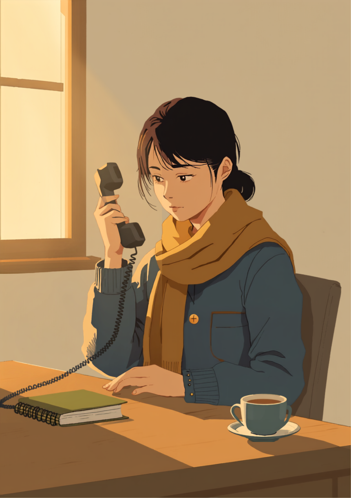
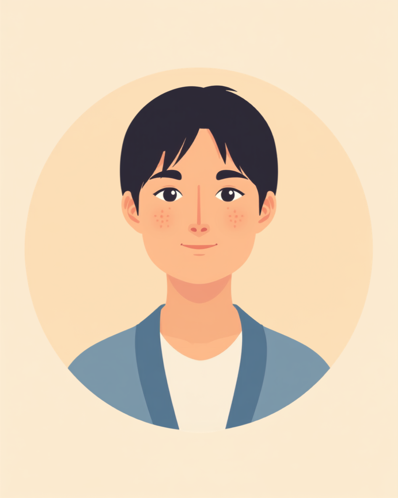

内定の電話を切ったあと、うまく喜べなかった
内定の連絡は、企業からいったん支援員である私のところに来て、それを本人に伝える、という流れのことが多くあります。Aさんのときも、そうでした。電話をかけて、「内定が出ましたよ」と伝えたとき、Aさんは「あ……はい、ありがとうございます」と言いました。声のトーンは、正直に言うと、思っていたより随分と静かなものでした。
それまで一緒に面接練習を重ね、想定質問にはほぼ完璧に答えられるようになっていて、企業からの評価も高かった方でした。だから私は、その日は素直に喜んでもらえるはずだと思っていたし、電話の向こうで「やった」という声を聞けると、なんとなく信じていたと思います。
電話を切ったあと、しばらく受話器を置いた手が止まっていたのを覚えています。何かがずれている、という感覚だけがあって、それが何なのか、そのときの私にはまだ言葉にできていませんでした。「内定が出た」という結果と、Aさんの表情や声のあいだに、小さな隙間があったのだと、今なら分かります。当時の私は、その隙間に気づいていながら、深く考えることをしませんでした。
「受かること」だけを目標にしていた1年目
支援員になって1年目の私は、正直に言うと、支援の成果を「内定が出たかどうか」で測っていた部分がありました。面接練習の回数、想定問答の精度、書類の完成度。数字や結果として見えるものを整えることに、多くの時間を使っていたと思います。それ自体が間違っていたとは、今も思っていません。ただ、それだけを見ていた、というのが1年目の私の限界でした。
数字で測れるものだけを見ていた
面接の受け答えは、練習すればするほど上達が目に見えます。だからこそ、支援している側もされている側も、そこに達成感を感じやすいのだと思います。Aさんも、模擬面接では毎回びっしりメモを取り、次の回には必ず改善が見られる方でした。「ここまでできるようになった」という手応えは、確かにあったのです。
けれど、面接の点数や書類の完成度は、その人が実際の職場でどんな小さな不安を抱えやすいかまでは教えてくれません。休憩時間をどう過ごすか、分からないことを誰にどう聞くか、体調が少し悪い日にどう振る舞うか。こうしたことは、面接の練習だけでは見えてこない領域でした。
入社から2週間ほど経ったころ、Aさんから短いメールが届きました。「少し聞きたいことがあります」というだけの、簡潔な文面でした。折り返し電話をすると、Aさんは、休憩時間の過ごし方がよく分からないこと、分からないことを誰に聞けばいいのか未だに掴めていないことを、ぽつぽつと話してくれました。その時点では、まだ「困っているけれど、なんとかやっている」という状態だったと思います。
それから3週間ほどして、Aさんから連絡がありました。「すみません、辞めることにしました」。理由を聞くと、大きな一つの出来事があったわけではなく、「毎日少しずつ気まずさが積み重なっていって、ある日もう無理だと思った」という説明でした。
辞めたと聞いた日に、初めて気づいたこと
正直に言うと、その電話を受けたときの私の最初の感情は、Aさんへの心配よりも先に、自分の支援は何だったのだろうという戸惑いでした。あれだけ面接練習を重ねて、企業からも高い評価をもらって、内定まで漕ぎ着けたはずなのに。数字の上では「うまくいった支援」だったはずのものが、3ヶ月も経たずに崩れてしまった。その事実をどう受け止めればいいのか、しばらく分かりませんでした。
後になって、Aさんが話してくれたことがあります。「面接のときは、聞かれることが分かっていたから、ちゃんと答えられたんです。でも入社してからは、聞かれてもいないのに自分から『分かりません』って言わなきゃいけない場面がずっと続いて。それがどれだけしんどいか、面接の練習では誰も教えてくれなかった」。この言葉は、今も支援をするうえで、私の中に残り続けています。
面接という場面は、聞かれることがある程度決まっていて、準備した答えを出せば評価されます。けれど実際の職場は、聞かれてもいないことを自分から言わなければならない場面の連続です。「分かりません」「困っています」「今日は少し体調がよくありません」。この一言を言えるかどうかが、続けられるかどうかを大きく左右するのだと、Aさんの話を聞いて初めて実感として理解しました。
もう一つ気づいたことがあります。内定が出た時点で、私自身の中で「この人の支援は一区切りついた」という感覚が、無意識のうちにあったということです。もちろん、入社後の面談は制度としても組まれていました。けれど気持ちの面では、内定という分かりやすいゴールに向けて全力を注いだ反動で、そのあとの数週間を「フォロー」程度の軽さで捉えてしまっていた自覚があります。
今、大事にしているのは「入社後まで一緒に見ていくこと」
Aさんのことがあってから、私は面接の点数や書類の完成度と同じくらい、入社後の最初の1〜2ヶ月をどう一緒に見ていくかを大事にするようになりました。具体的には、内定が出た時点をゴールではなく折り返し地点として扱い、入社後のスケジュールを先に決めておくようにしています。
面接の点数だけでは見えないものを聞く
入社後の面談では、「仕事はできていますか」ではなく、もっと具体的で小さなことを聞くようにしています。
- 「お昼休みは、誰かと話していますか、一人で過ごしていますか」
- 「分からないことがあったとき、誰に聞くか決まっていますか」
- 「この1週間で、言いたかったけど言えなかったことはありますか」
- 「体調がよくない日、周りにどう伝えたらいいか困っていませんか」
これらは、面接ではまず聞かれない質問です。けれどAさんの経験を振り返ると、辞めるに至った積み重ねは、まさにこうした小さな場面の中にありました。数字には表れにくい違和感を、早い段階で拾えるかどうかが、続けられるかどうかに関わってくると、今は感じています。

この面談の姿勢は、Aさんの経験がなければ持てていなかったものです。あのとき感じた「何かがずれている」という違和感を、電話を切った瞬間に深く追いかけていればと今でも思うことがあります。同時に、その経験があったからこそ、今関わっている方たちに対しては、内定という結果の先まで、もう少し粘り強く一緒に見ていられるようになったとも思っています。
よくある質問
関連記事
この記事に、聞いてみたいことはありますか？
「自分の場合はどうなんだろう」と思ったことを、気軽に書いてみてください。いただいた質問は個別にお返事したうえで、匿名で記事にすることがあります。
mimemime代表。就労支援の現場経験をもとに、障がいのある方の働く不安に寄り添う記事を執筆。